01
Pill indicator nodes
Solid color headers were replaced with a simplified pill showing node color and node type. The nodes read more cleanly, and the same visual language now carries across all three canvases.
Workflow Canvases · EKN / over.vu · 2026
Three canvases, built over time and never reconciled. One consistent experience, without making users relearn a thing.
TL;DR
Problem
Three canvas features were built separately and behaved differently, driving a backlog of tickets.
Role
Lead designer. I audited all three and designed one shared system.
Result
Median configuration time fell from ~6 min to ~1:21, with no new bugs after launch.
12+
Pain points resolved
~77%
Faster to configure
82%+
Task completion
0
New post-launch bugs
01 / Context & my role
over.vu is an internal civil engineering project management application used company-wide to manage client work. Three of its features are canvas-based: Automation Builder, People Selection, and Status Gating.
The problem
Three canvases that behaved differently from each other: an inconsistent experience across all three, and a backlog of user support tickets for each.
Each canvas was built sequentially, and each improved on the one before it. But none of them was ever brought back in line with the others.
The canvases didn’t just look different, they behaved differently. Duplicating a node wasn’t possible on any of them, and in Automations, removing a connection meant deleting a node.
As Lead Product Designer, I inherited the inconsistency. My job was to unify the three without making users relearn everything they already knew.
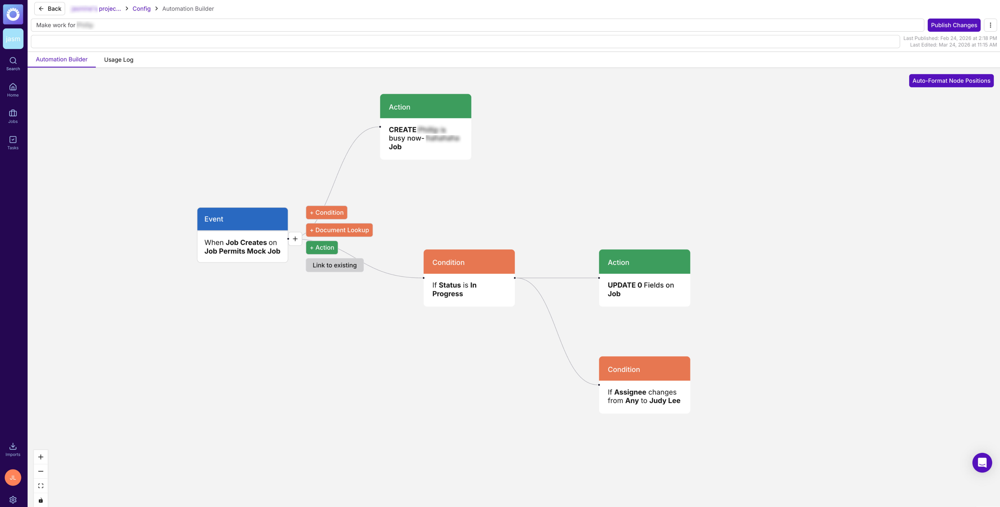
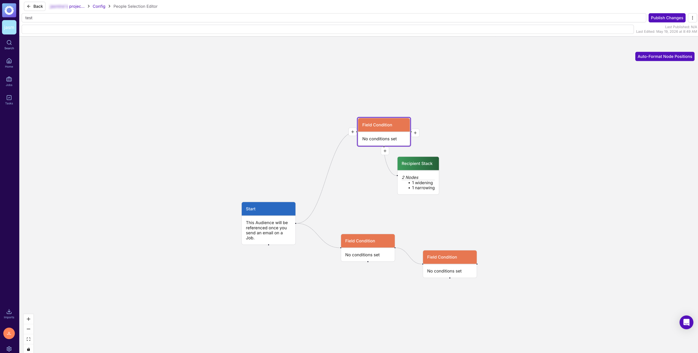
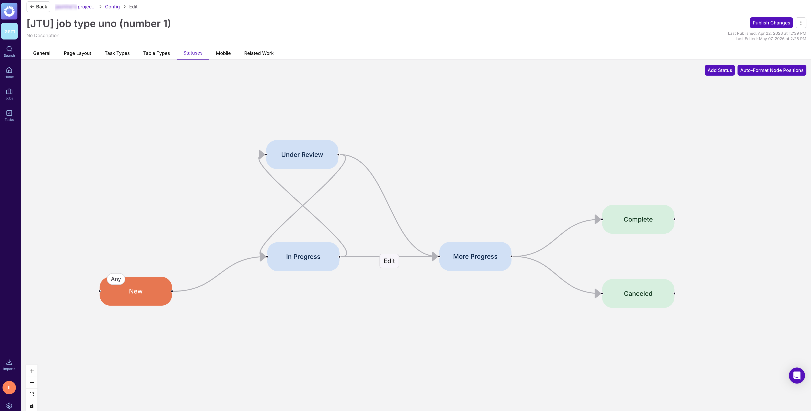
02 / Goal
How might we bring three canvas features into one consistent experience, while resolving the pain points users had already reported, and raising the bar on all of them? People Selection was the strongest of the three, so it became the baseline, though its experience still had plenty of room to improve. The goal was to beat it, not just copy it.
03 / Research
I sent a survey to 8 power users across all three features, and 5 of 8 responded. The results were surprisingly positive overall. The frustrations that did come up lined up directly with tickets we already knew about, rather than surfacing anything new.
A positive result isn’t a null result. It told us where not to intervene, and that shaped a conservative, focused approach: fix what users named, and leave what they’d already learned.
04 / Audit & approach
I audited each canvas end to end, documenting screens, nodes, conditions, actions, and interactions. I referenced the React Flow library throughout, so every design change stayed technically feasible.
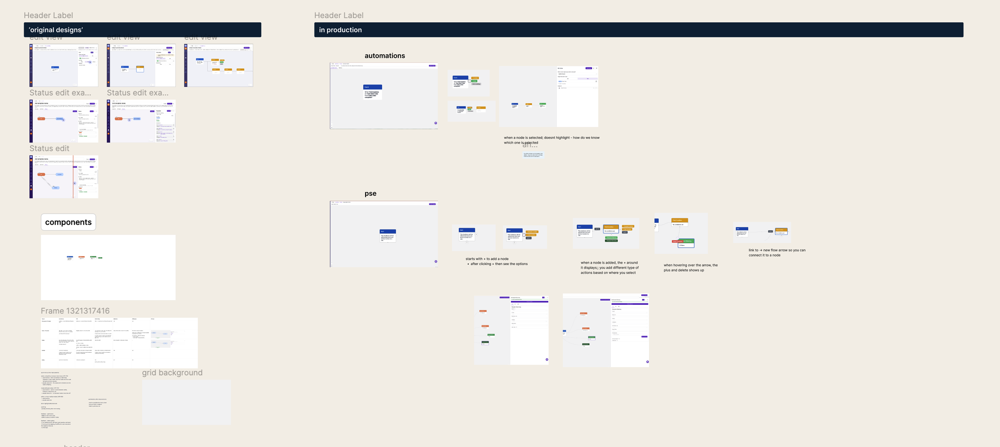
Dev leads validated feasibility in regular syncs as the designs evolved, the PM checked that every addressable pain point was in scope, and I coordinated with other designers wherever their work intersected with the canvas.
The guiding rule was to simplify the visuals, preserve the flows. Condition and action flows stayed as they were, so users kept the muscle memory they’d already built.
The first direction kept the existing node styling with only slight modifications. It stood out too much on the canvas, and the colors didn’t work well together.
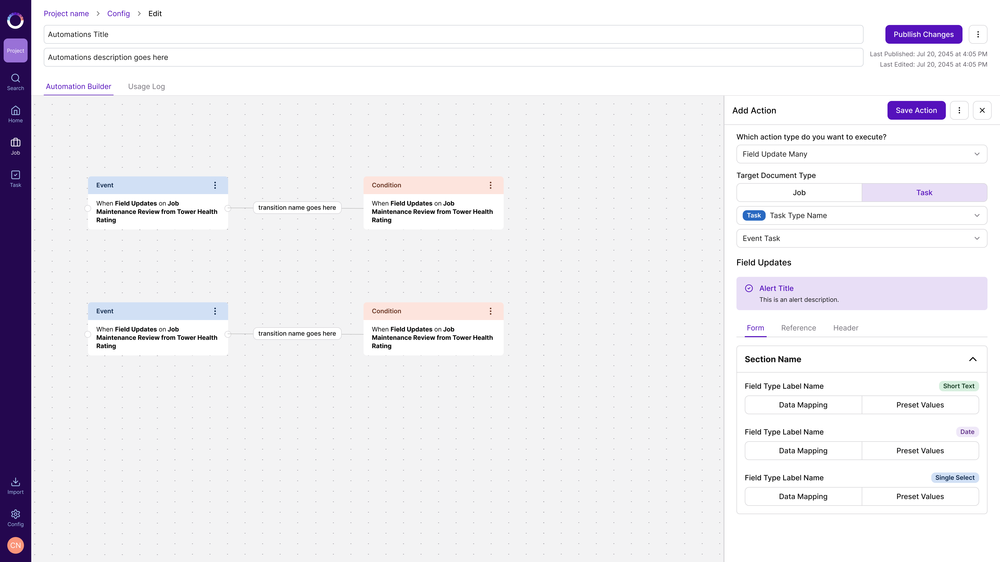
The general action of the node becomes the text, with the node type shown as a badge. The limit: it breaks down when a condition node holds multiple conditions.
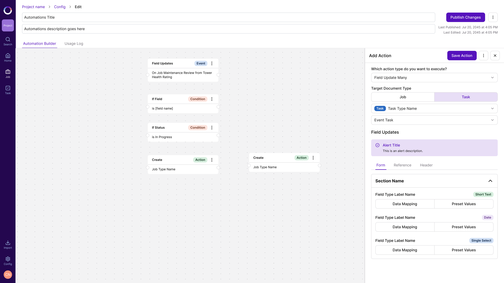
05 / Final design
The redesign pulled the strongest ideas from across the three canvases into one shared system. It didn’t just copy People Selection’s best interactions into the other two canvases: for each one, I looked for what could be better, then applied the improved version everywhere.
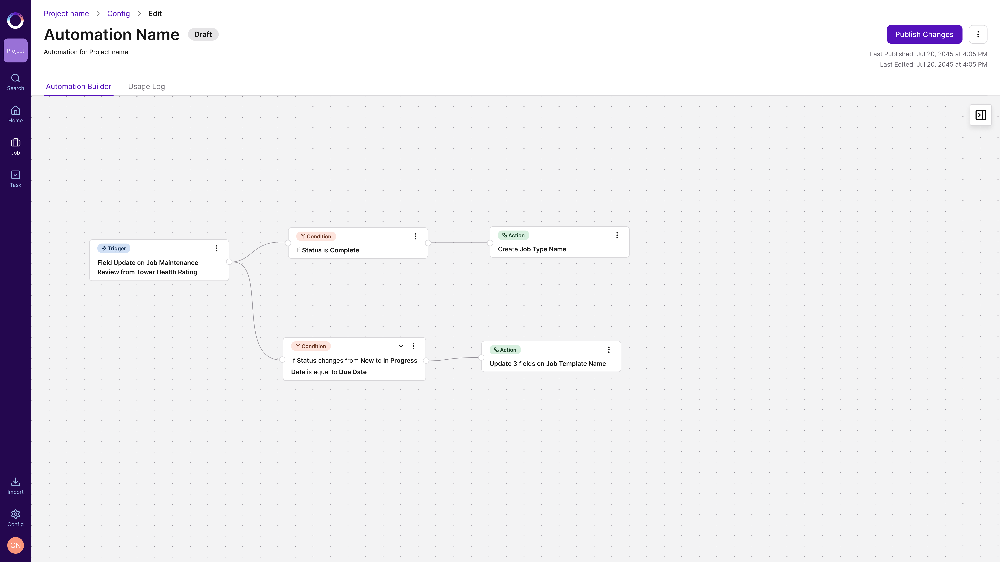
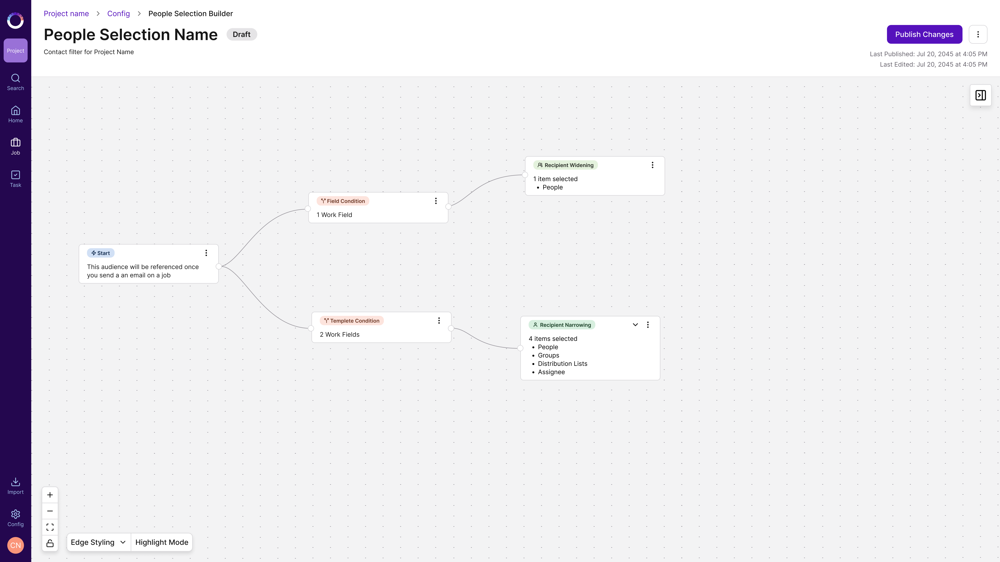
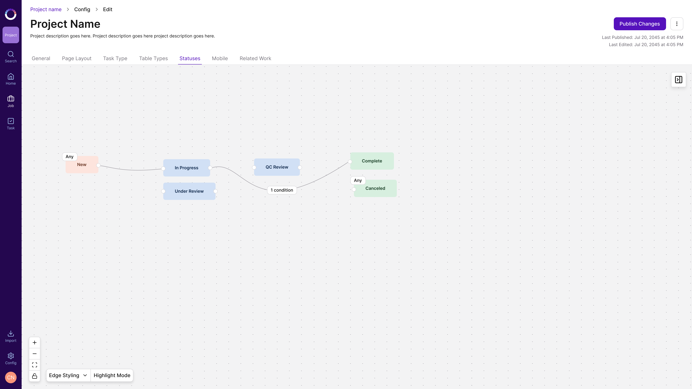
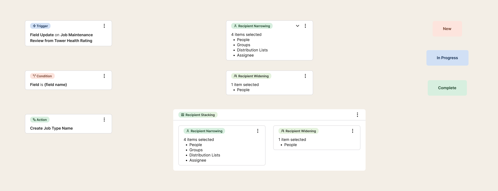
01
Solid color headers were replaced with a simplified pill showing node color and node type. The nodes read more cleanly, and the same visual language now carries across all three canvases.
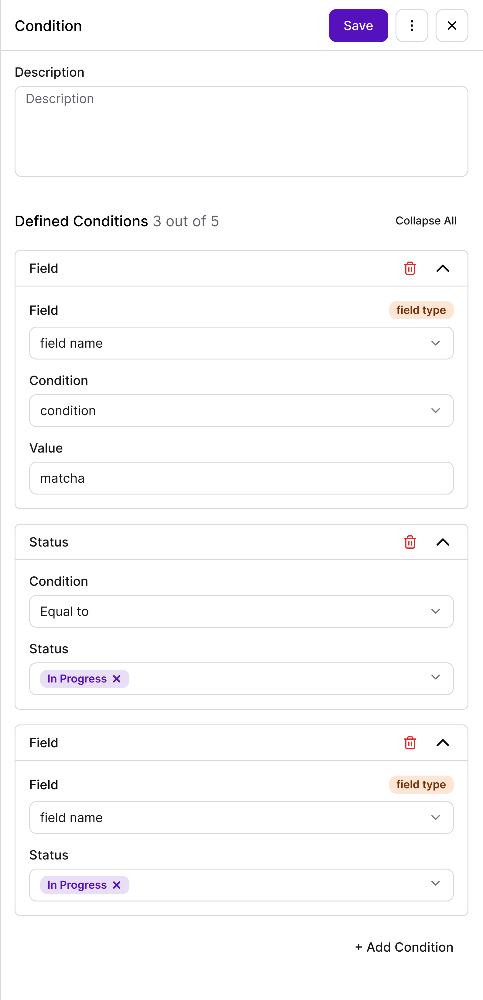
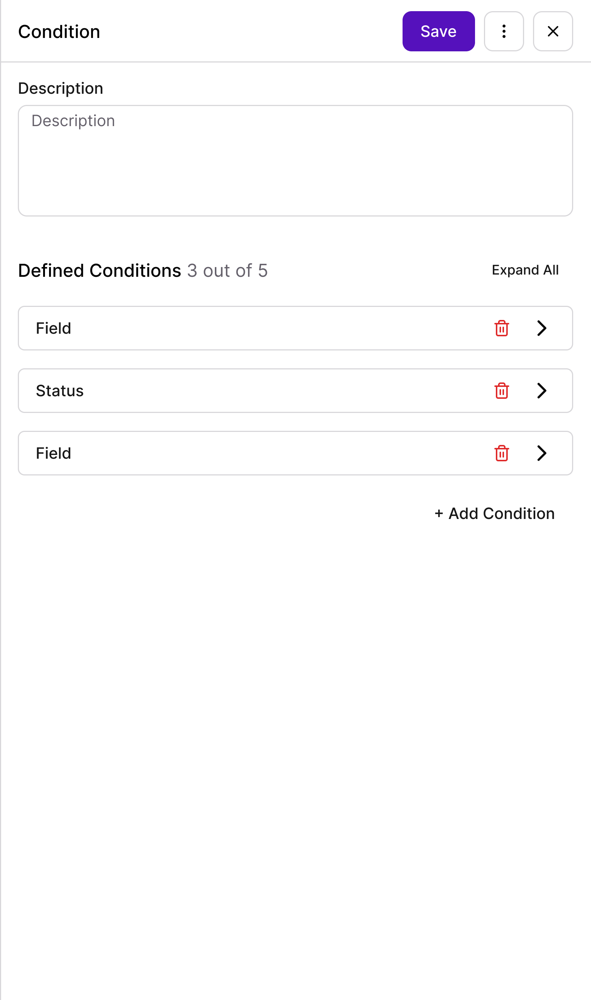
02
Already available in People Selection, now unified into Automations, so users can build richer logic without stacking extra nodes. The panel itself is improved too: Collapse All / Expand All, a delete button in each condition’s header, a field type badge, and a single Add Condition button where there used to be two.
Status Gating’s transition rules are the equivalent: a status only moves to the connected status once its conditions are met. They now use the same side-panel layout instead of a modal.
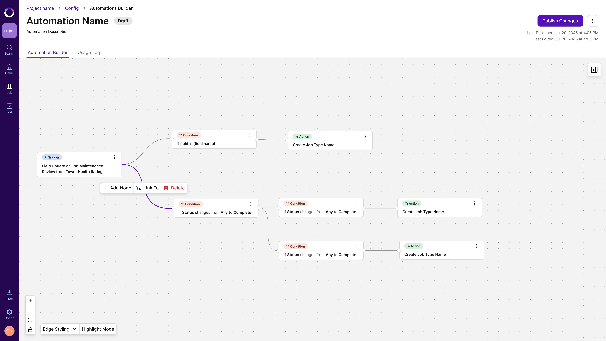
03
Select a connection to add a node in between, relink it to a different node, or delete it. Before, the only way to remove a connection was to delete a node, one at a time. Now you can delete a connection without removing the node, and reconnect the nodes.
Adding a node between two nodes is new; People Selection didn’t have it. People Selection did already have a version of relinking and deleting, so the updated design improves that interaction and brings it to Automations and Status Gating too, fixing a long-standing friction point.
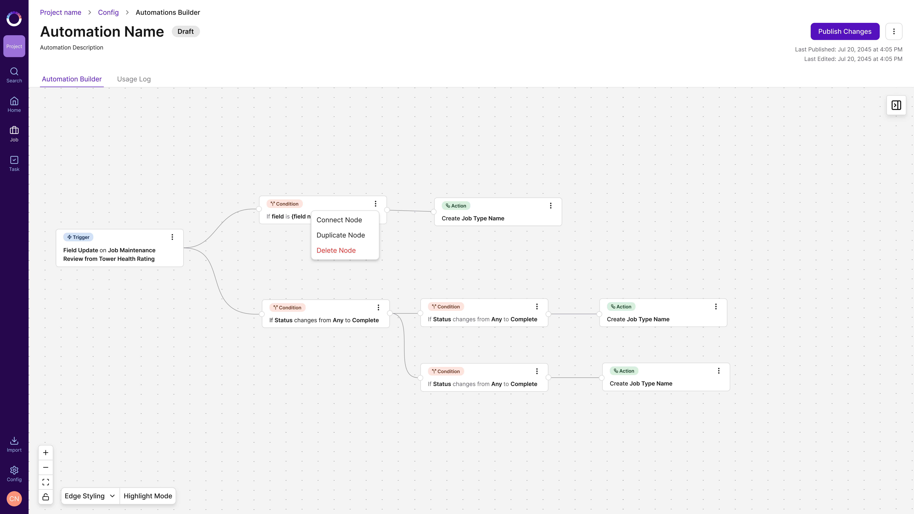
04
Duplicating a node is now available on all three canvases, closing one of the most-requested tickets.
06 / Output
The deliverable was an extensive annotated handoff for each of the three canvases: Automation Builder, People Selection, and Status Gating, each with a change-by-change breakdown. Alongside it, the full canvas audit gave engineering and QA a shared reference for what each canvas did before, and what it should do now.
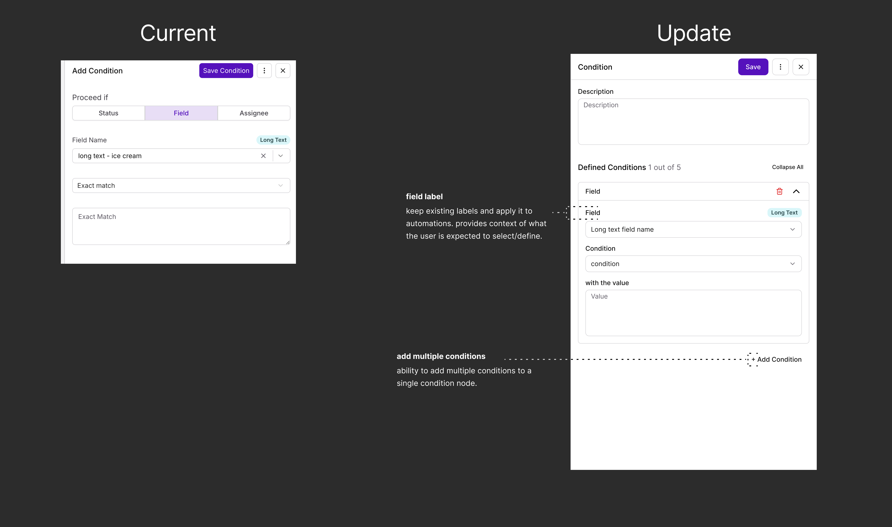
07 / Results
The unified canvas launched successfully, with extremely positive UAT and post-launch feedback from users and stakeholders. More than 12 user-reported pain points were addressed across the three canvases. There have been no new bug tickets, errors, or frustration reports since launch. If anything, users are now asking for more capabilities within Automations, a sign the unified experience raised their confidence in the product.
~77%
Drop in median configuration time, from about 6 minutes to about 1 minute 21 seconds, as users got faster and more confident with the unified canvas.
Post-launch Amplitude data confirms adoption of every newly introduced interaction. All figures below are from launch to day 90.
909
Node connections madeThe primary canvas action. 720 condition-to-condition, 152 trigger-to-node, 37 action connections.
180
Node duplications134 condition nodes and 46 action nodes. A real pain point, confirmed by usage.
139
Connection deletionsConfirms the friction of the old behavior was real.
82%+
Task completion rateOf users who add a node, over 82% go on to configure and publish their automation.
Status Gating showed the clearest behavior shift. Users chose drag-and-drop (12 times) and the add node button (6 times) over the legacy on-screen button, so the unified pattern was picked up without friction.
08 / Outcome & reflection
Three features that grew up separately now behave like one product. The unification worked because it respected what users had already learned: the research set the boundaries, the audit made the gaps visible, and the handoff left no room for ambiguity.
What I took from it: a positive survey result wasn’t a reason to under-deliver. It was a reason to be precise. Knowing what users were happy with let me spend the whole redesign on what they weren’t. Consistency was the goal, but the improvements are what users noticed: they’re now asking for more capabilities within Automations.
Inherited a shelved solution, a hard deadline, and a team expecting the impossible. Here’s what shipped.
Read the case study →